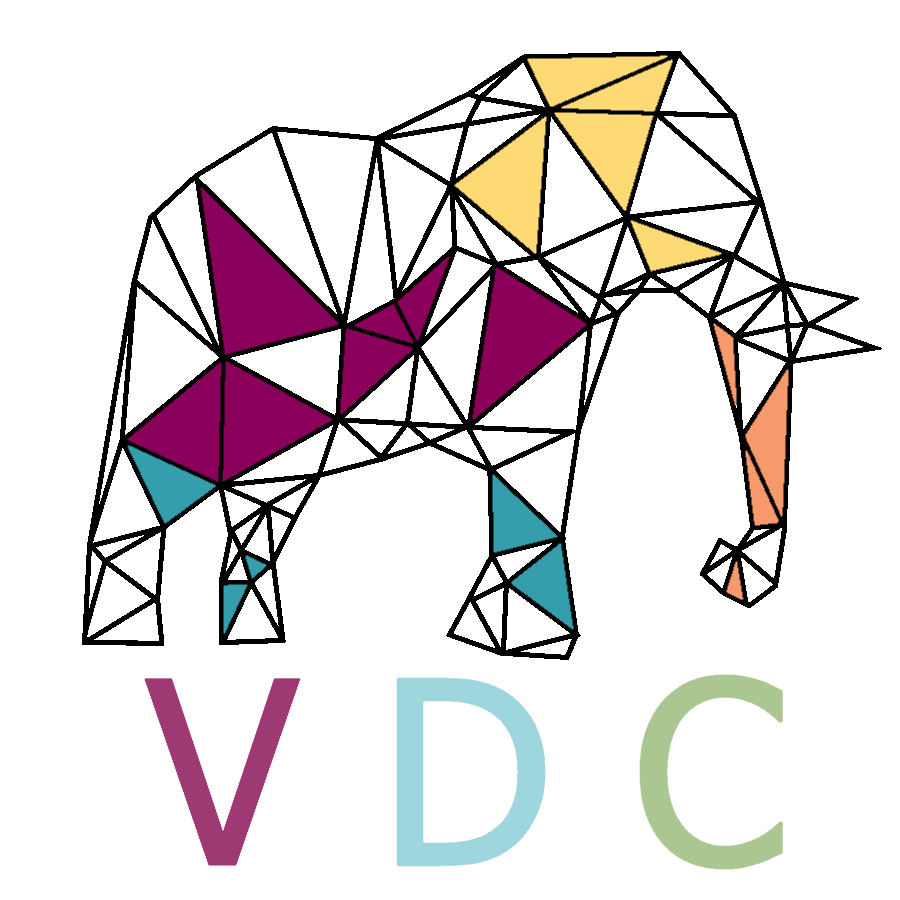
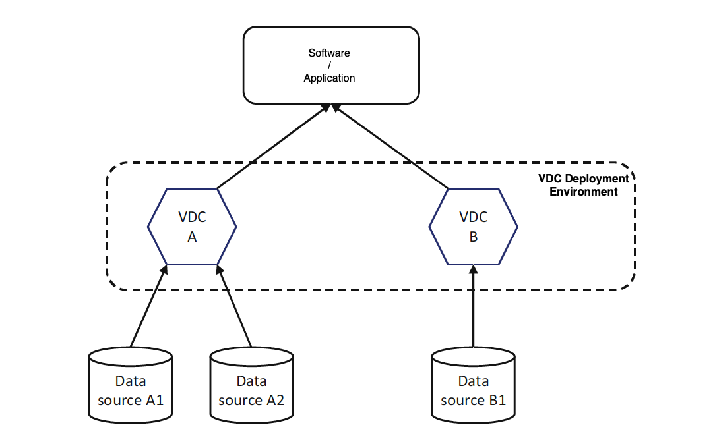
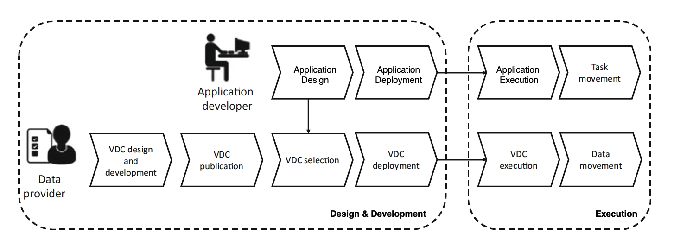

Welcome to Virtual Data Container's Official Page
Here you will have all the access to the VDC's code, the Blueprint-Artifact Editor's code, as well as their latest releases.

What is a VDC?
The Virtual Data Container (shortly refered to as "VDC") represents a new way of presenting the data. As the modern world constantly evolves, data are becoming a really valuable asset. During the past decade, the total amount of data generated by the world has skyrocketed. It seems only reasonable to move on to new ways of handling data, but also presenting / selling them as products. What if we were able to choose among various services, applications that suit our needs, simply presented and easily organised inside a virtual container? What if, choosing the best apps and services was just as simple as choosing a product from the Super Market? The Virtual Data Container aims to become exactly that. A new way of presenting data, services and applications, as mentioned earlier.
In a few words, a Virtual Data Container could be a set of data, a web service, an operating system, an application etc., organised in a virtual container image and presented to the potential buyers / users. This is the future, transforming existing operations and datasets to services and making them easily accesible to the end users. A VDC is versatile, easily upgradable, and can be tailored to a specific customers' needs. However, in case a VDC is structured as a concrete and preset / prefixed service, potential users can find out if a its good for them or not.
As data can be distributed among resources both on the Cloud and the Edge, Virtual Data Containers (the VDCs) are proposed as a mean for timely and securely offering data also transparently with respect to their location and format.
In more detail, a VDC:
- Provides uniform access to data sources regardless of where they run, i.e., on the edge or on the cloud.
- Embeds a set of data processing techniques able to transform data (e.g., encryption, compression).
- Allows composing these processing techniques in pipelines (inspired by the node-RED programming model) and executing the resulting application.
- Can be easily deployed on resources which can live either on the edge or in the cloud.
Design & Development

The first step of an application life-cycle concerns the work performed by a data administrator (a.k.a. data provider) who, based on the managed data sources,
creates a VDC JSON-Schema (“Artifact” or “Blueprint”) which specifies the characteristics of a VDC in terms of following:
- The exposed data sources.
- The exposed APIs.
- How the data from the data sources needs to be processed in order to make them available through the API.
- The non-functional properties defining the quality of data and service.
- The components cookbook: a script defining the modules composing the container as well as their deployment.
In this GitHub repository, we provide a VDC Schema creator, for the data providers to be able to easily introduce themselves to the VDC “network”. That we will analyse later on.
Following the Service-Oriented Computing principles, the visibility principle requires to publish a description of a service to make it visible to all the
potential users. As a consequence, the data administrator publishes the VDC Artifact. Once published, the developers come into play. As the
information included in a VDC Blueprint-Artifact also concerns functional and non-functional aspects, a developer relies on this information to select the most
suitable VDC according to its purposes. It is worth noticing that, based on the nature of his/her needs, the developer could select different VDCs referring to different
purposes. Finally, the developer designs and develops the software and deploys it on the available resources which can be located on the edge or in the cloud. The initial
deployment is the key element in the approach; as in this phase, it is required to know which are all the possible resources on which the VDC can be executed. A standard Fog environment implies that DaaS can be provided using resources belonging to both the provider and the consumer. Without loss of generality, we can assume that the provider resources are always in the cloud, while the consumer resources are always on the edge. In this way, a VDC living in the cloud has more capacity and it probably lives close to the data source to which it is connected. Conversely, a VDC living on the edge has the advantage of living closer to the user, thus reducing latency when providing the requested
data. Deciding where to deploy the VDC depends on the resources required by the VDC (e.g., it might happen that the amount of resources to process the data before
making them available to the user cannot be provided at the edge), the network characteristics (e.g., the connection at the consumer side can support a high-rate
transmission), and security (e.g., not all the data can be moved to the consumer side, thus even the processing cannot be placed at the edge).
Execution

The VDC Deployment Environment can be built on top of a Kubernetes cluster, or a Docker / Docker Swarm cluster. In fact, given a VDC Blueprint / Artifact, based on the cookbook section, a docker container is generated and deployed. Furthermore, given a VDC Blueprint-Artifact, many application developers can select it for their own application. As a consequence, several applications can operate with different VDCs. Moreover, as the same VDC Blueprint can be adopted in different applications, each of these applications includes instances generated from the VDC Artifact; thus, they are connected to the same data sources. Thanks to the abstraction layer provided by the VDC, applications deployed through the platform can access the required data regardless of their nature and location (cloud or edge). Due to the distributed nature of the applications to be managed, to the execution environment being distributed by definition and because of the different computational power offered by the devices, it might happen that only a subset of the modules can be installed on a specific edge device. For this reason, at deployment time, not only the data-intensive application is distributed over the cloud and edge federations, but also the execution environment is properly deployed and configured to support the data and computation movement. The decision on where to locate both the application and the data required by the application itself is taken at design time, but can be updated during the application execution, according to the detected state of the execution environment.
How can I know which VDC best suits my needs?
For a VDC's operation to be fully understandable by potential users / buyers, each and every one will have a unique JSON formatted document, named "Blueprint" or "Artifact". This Blueprint is divided into four main sections (one can extend or reduce those sections). Each section refers to a specific group of people, for each group to better understand the VDC's structure and way of operation. The first section is intended to provide general information to one of the company’s decision strategy makers, usually the one responsible for it’s vision. The second one should provide all the information needed for a company’s executive who has primary responsibility for managing it’s finances and all the issues of financial nature. The third section should refer to the company’s executive whose main, primary focus is on scientific and technological issues within the organization. Last but not least, the fourth section should be written with the company’s developers in mind. They shall have access to all the vital information for their knowledge upon the VDC to be thorough.
The VDC Artifact-Blueprint
As we already mentioned, the original VDC Blueprint is divided into four main sections. Let us see the sections with more detail:
First Artifact Section
Unique identifier, which differentiates the product
General details, a plain text that includes details about the functionality, description and logic of the VDC. Furthermore, the team behind the VDC should provide general information and a description regarding the VDC's services and the data. For example, they could give an answer for each of the following questions: What data is involved in the VDC? What is the value of the data? What are the services that access the data?
OS details, the VDC’s seller should state both the OS’s host and distribution of it.
Licencing, again a plain text field which shall briefly explain details about the VDC’s licencing. Those details may vary depending the VDCs’ included. This field shall contain only the most important pieces of information.
Compliance, once again a string value, summarising the cases where the VDC complies and / or conforms to a policy or a law.
Update strategy, a plain text that determines the OS’s upgrade plan for traditional updates, security updates and backports.
The first section of the Artifact records general information related to the VDC composition system, like a business description of it, legislative compliances, licences, the category and an abstract reference to its inputs and outputs. It should properly introduce the reader and potential buyer to the VDC (the service composed software), analysing all the basic and key elements. This section should not detail specialized VDCs’ sectors, for such a description will be cited in later sections of the Artifact. The first section’s main aim is to provide all the information needed for the decision maker (like a company’s senior officer) to consider acquiring the VDC.
Second Artifact Section
Third Artifact Section
Fourth Artifact Section
The VDC Artifact-Blueprint Editor
We will upload a complete VDC Artifact-Blueprint Editor soon. Through the Editor, one will be able to build a correct JSON-formated Artifact for any VDC. An online instruction "booklet" will be available as well.